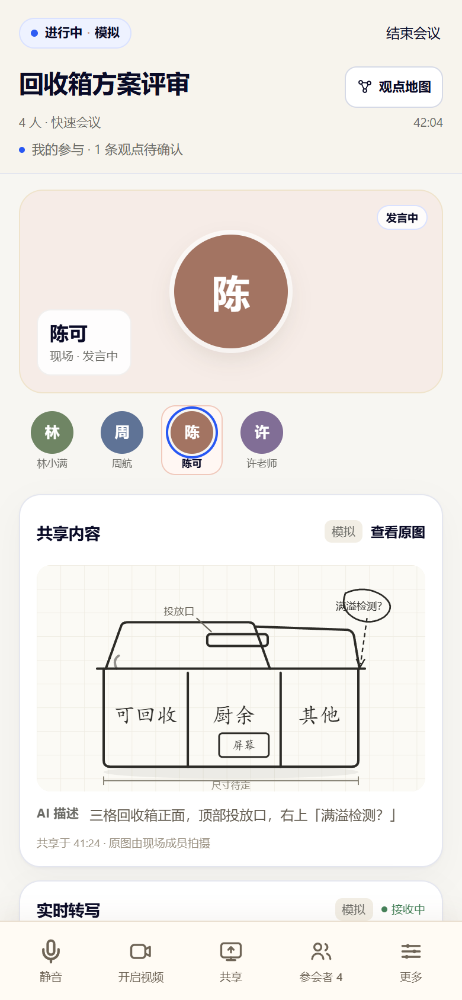
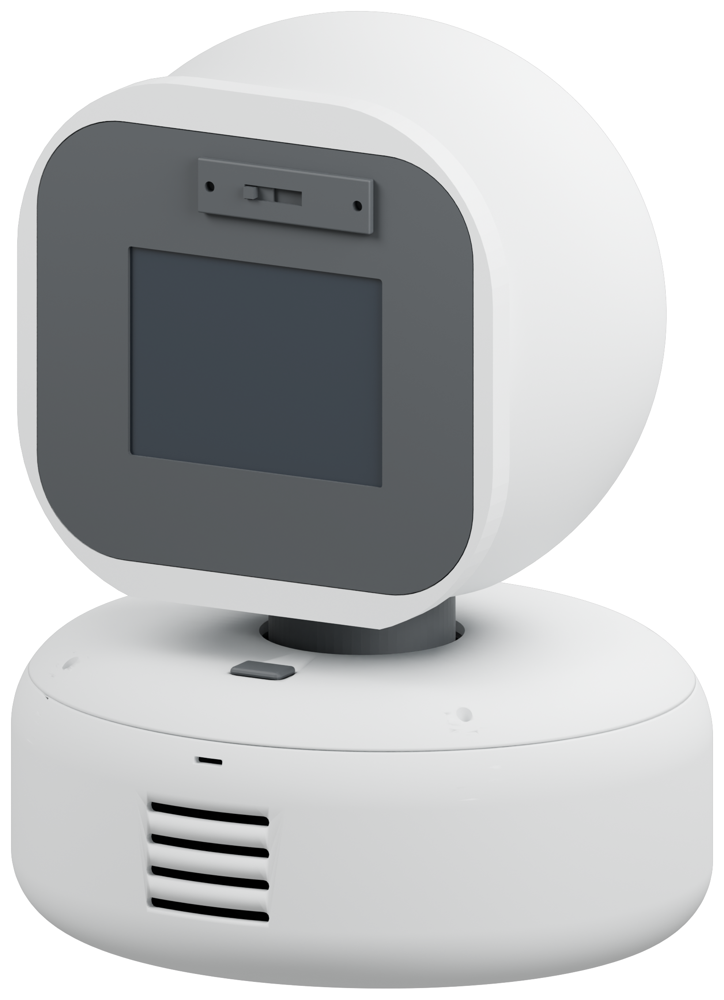
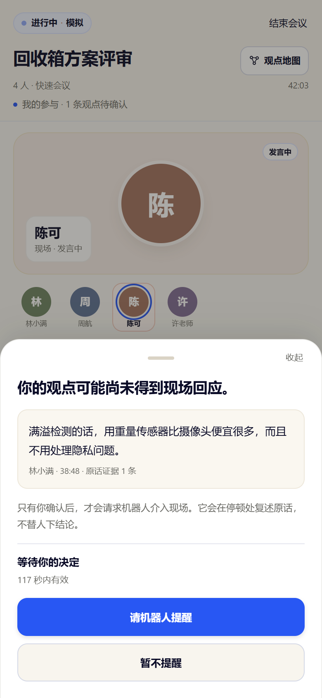
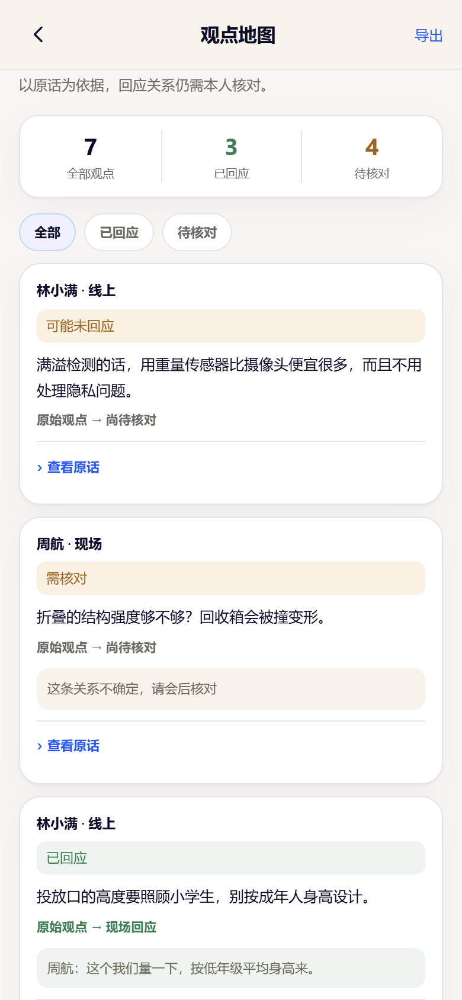
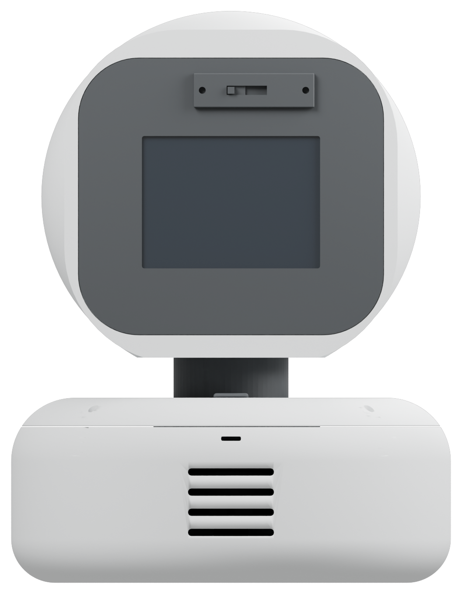
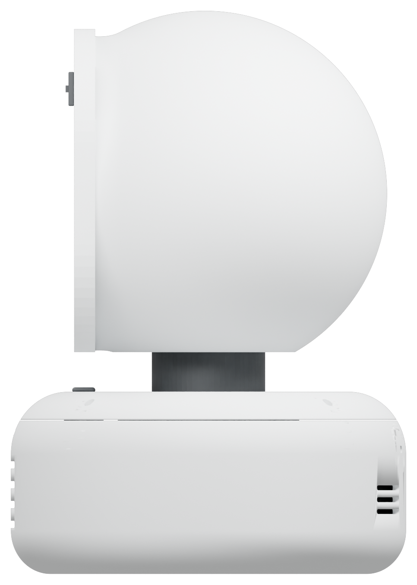
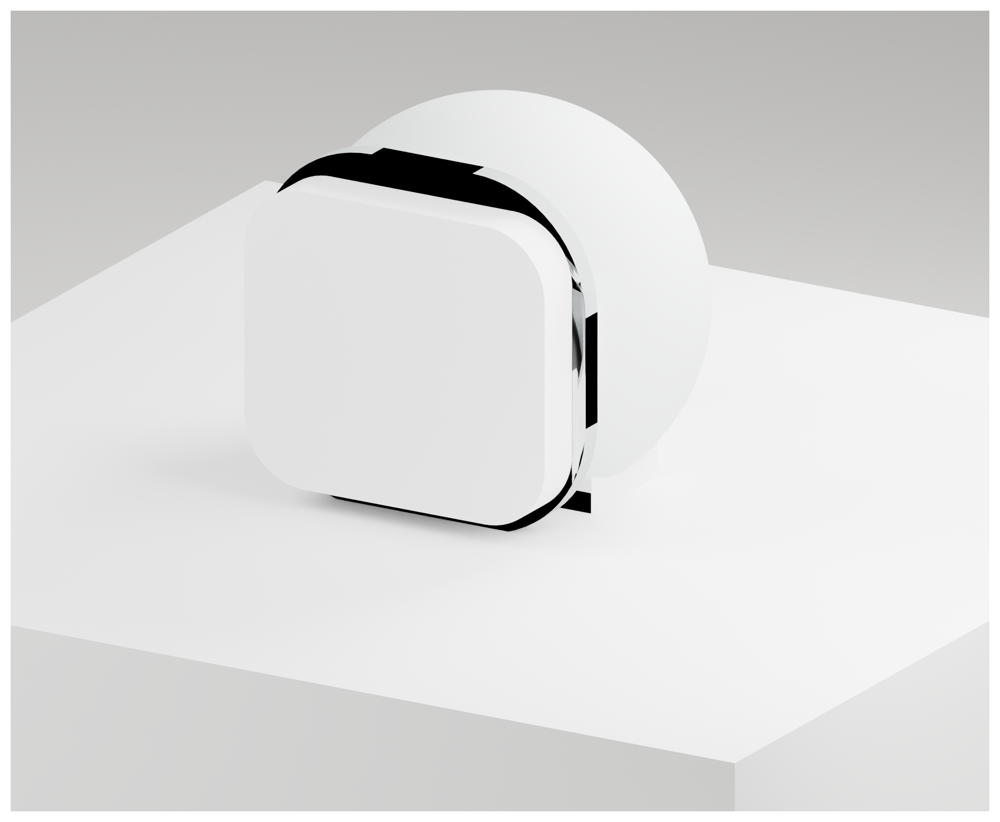

01
提出观点
线上成员在客户端发言。转写结果带上 utterance_id 与说话人归属，实时写入本地事件账本。

天猫 AI 黑客松 · 高校挑战赛 / 效率进化
在议是一台守在会议桌边的 AI 桌面伙伴。它替线上成员看见现场，在本人点头之后代为发声，再把每一条提醒连回当时那句原话。

混合会议里，远程成员的话常常停在扬声器里。现场继续讨论，没有人回应，也没有人记得。问题不在注意力，而在结构：发言被记录了，观点却没有进入讨论。
在议不替人喊话。它先判断“这条观点是否已经得到现场回应”，再把判断交还给观点本人。
满溢检测的话，用重量传感器比摄像头便宜很多，而且不用处理隐私问题。
未回应 · 仍在讨论结构折叠的结构强度够不够？回收箱会被撞。
连接件可以用卡扣，拆装方便。
那我们先定结构，材料下周再说。
场景示意 · 非真人实验录像
五个动作，一条证据链。每一次介入，都从本人确认开始；每一次确认，都能回到原话。
线上成员在客户端发言。转写结果带上 utterance_id 与说话人归属，实时写入本地事件账本。

千问对照观点之后的现场窗口，只回答一个问题：有没有可关联的回应。证据不足、说话人不明，就弃权。
真实模型已验证候选只发给观点本人。卡片里是原话与倒计时，不是系统替人写好的结论。120 秒未确认自动取消。
已实现
确认后，机器人转向现场，在停顿处复述观点要点。它复述原话，不替人下结论，也不参与争论。
交互模拟 · 实机联调中“满溢检测用重量传感器，比摄像头便宜，也不用处理隐私问题。”
散会后打开观点地图：聊了什么、谁持什么观点、哪些问题仍未回应。每条记录都能回到当时那句原话。
已实现
200 毫米高，一只手掌的占地。头与底座之间只有一圈短颈：转头时，麦克风留在桌面，声音不跟着晃。



短颈把转头与拾音分开。头部只承担屏、摄像头与核心板；底座留下麦、功放、喇叭、舵机与停止键。
PLA Matte 分段打印，螺纹与卡扣保留在模型原生几何里。全杜邦接线，唯一焊点是喇叭。
打印件与模型已具备，整机仍在装配。屏幕、舵机、麦克风与功放已分项点亮，完整连续会议尚未验收。
只有观点所有者能授权提醒。120 秒未确认，候选自动取消；确认之外没有第二条路径。
证据不足、说话人不明、多人混说、会议已结束，一律输出 uncertain。宁可不问。
每条提醒绑定原始 utterance_id。点一下，回到当时那句原话，而不是一句转述。
AI 只产出候选与证据，不生成动作指令，不评价观点对错，也不替任何人做决定。
技术在这里只做一件事：把“可能被忽略”变成一条有证据、可核对、可拒绝的候选。
提示词不评价对错、不建议措辞。输出三态与证据 ID；没有同一会议内的原始发言作为证据，不允许给出“被忽视”结论。
prompt v1 · qwen-plus · temperature 0.1状态必须合法，证据必须存在，回应必须来自现场。任何一条不满足就报错，不展示成功。
AnalysisResult · JSON Schema新建会议、加入发言、以线上成员身份收到候选、确认后看到模拟播报，最后回到观点地图。全部为本地静态模拟，不需要登录。
粘贴一段会议转写，调用真实 qwen-plus，得到三态结论、证据 ID 与弃权理由。结果不预置，判断可能不同于预设案例。
AI 实验台跑在魔搭创空间的免费 CPU 上，冷启动可能需要几十秒。若服务端未配置 QWEN_API_KEY，页面会明确报错，不会返回伪造结果。